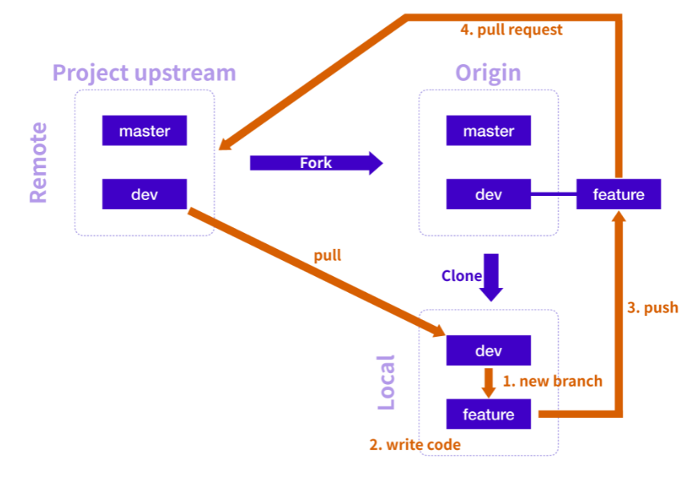
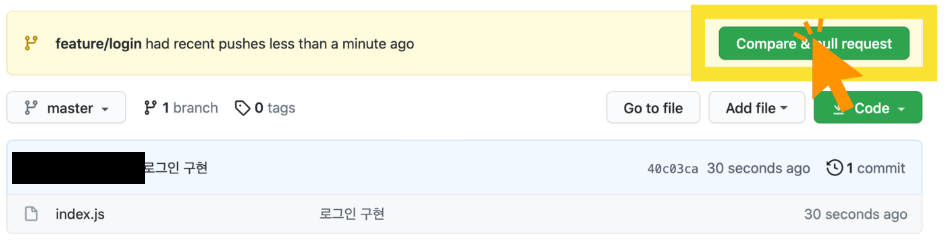

프로젝트를 진행하는 전체 흐름은 다음과 같다.
Upstream에서 Origin으로 Fork하고 Local로 Clone한다.
Local에서 새로운 브랜치를 생성하고 작업이 끝나면 Origin으로 Push한다.
Push된 내용이 Upstream에 반영될 수 있도록 Pull Request한다.
만약 작업하던 중간에 Upstream에 업데이트가 생긴다면 Local로 Pull해서 가져온다.
Clone 이후의 과정을 반복해서 프로젝트를 진행하면 된다.
PR(Pull Request)과정은 Push를 하면 Github 에서 아래 사진과 같이 PR을 할 수 있는 버튼이 나타난다.

만약 위와 같은 화면이 나오지 않는다면 Pull requests탭에서 직접 PR을 생성하고 보내면 된다.